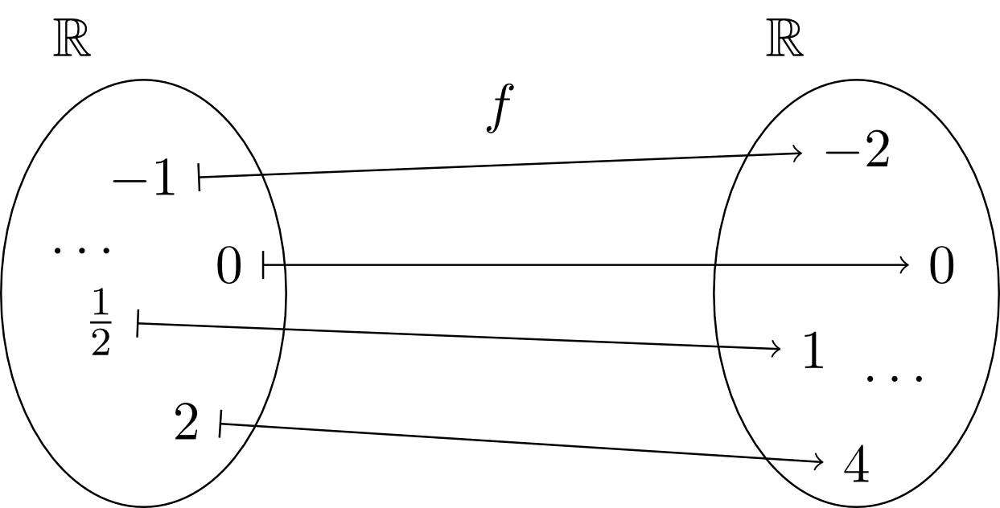
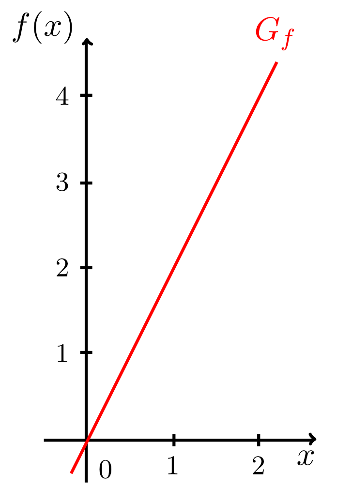
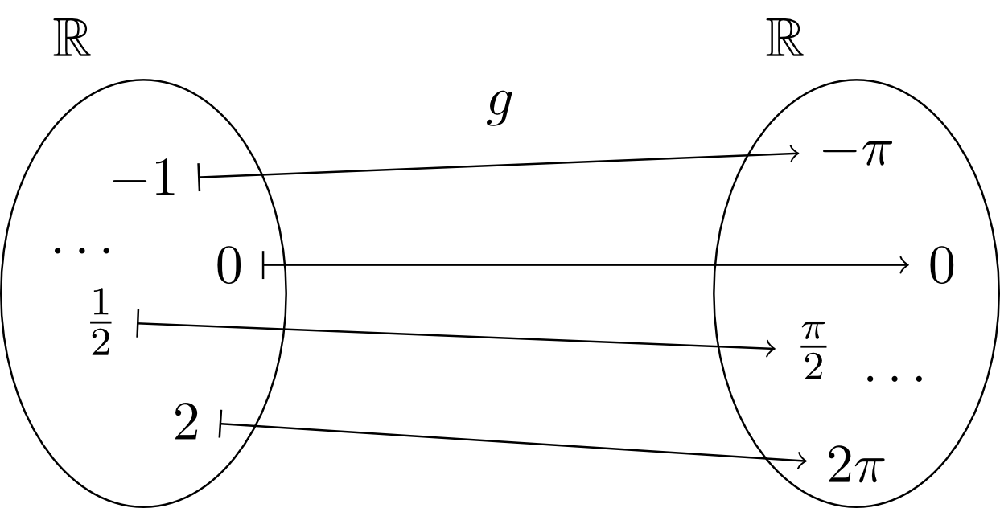
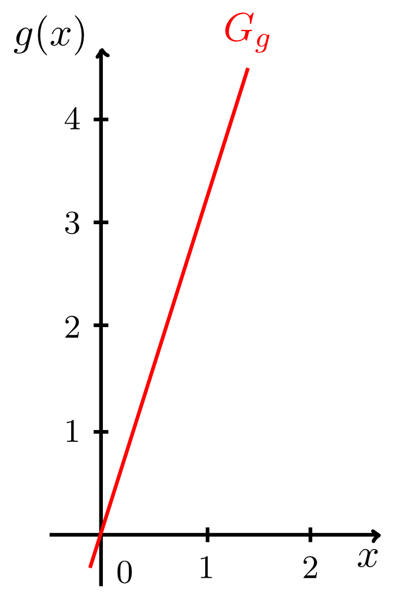
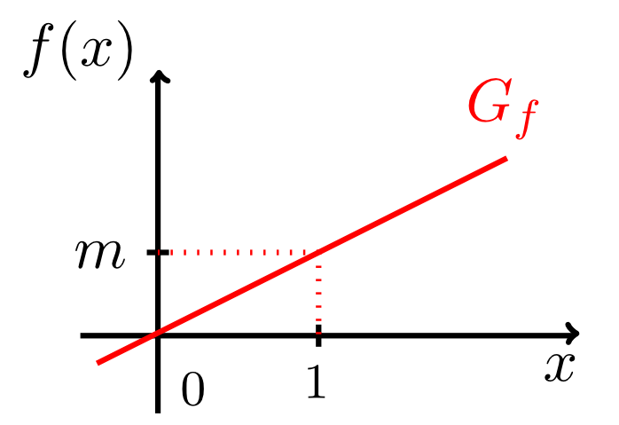

1 - 1.6
6.2.3 Lineare Funktionen
Ausgehend von der Identität, kann man sich nun komplexere Funktionen, die sogenannten linearen Funktionen, konstruieren. So kann man sich zum Beispiel überlegen, dass jede reelle Zahl ihrem doppelten Wert, oder ihrem -fachen Wert, usw. zugeordnet werden kann. Etwaoder
 
 
Alle linearen Funktionen (außer der Nullfunktion, s.u.) haben also als Wertebereich ebenfalls die gesamten reellen Zahlen (). Der Faktor, mit dem jede reelle Zahl in einer solchen linearen Funktion multipliziert wird, heißt Steigung der linearen Funktion. Oft möchte man auch bei linearen Funktionen nicht eine bestimmte Funktion mit spezifischer Steigung angeben, sondern irgendeine mit beliebiger Steigung :

Woher kommt der Begriff Steigung für eine lineare Funktion? Teilt man die Differenz, um welche der Graph in vertikaler Richtung anwächst, durch die entsprechende Längeneinheit in horizontaler Richtung, so erhält man die Steigung .
Info
6.2.1
Eine lineare Funktion
ist genau dann streng monoton wachsend, wenn ihre Steigung positiv ist, also gilt; und sie ist genau dann streng monoton fallend, wenn ihre Steigung negativ ist, also gilt.
Eine lineare Funktion
ist genau dann streng monoton wachsend, wenn ihre Steigung positiv ist, also gilt; und sie ist genau dann streng monoton fallend, wenn ihre Steigung negativ ist, also gilt.
Aufgabe 6.2.2
Welche lineare Funktion ergibt sich für die Steigung ?
Welche lineare Funktion ergibt sich für die Steigung ?
Aufgabe 6.2.3
Welche Funktion ergibt sich für die Steigung ?
Welche Funktion ergibt sich für die Steigung ?